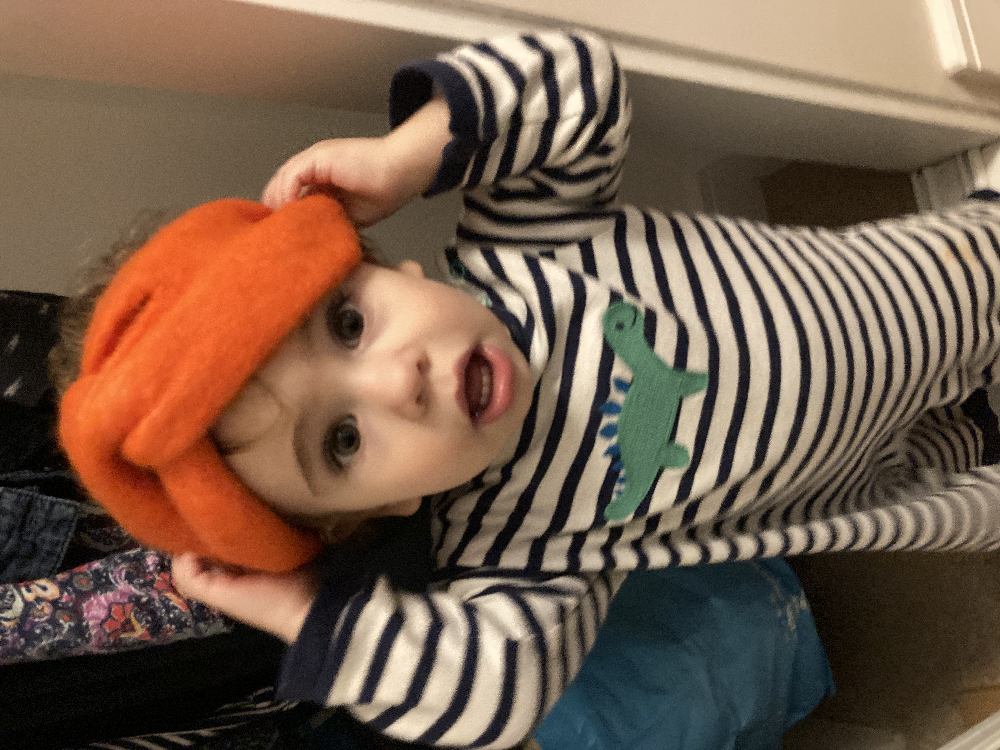

Intro
Jess Schofield
Hello World! Welcome to my first web page.
I'm Jess! I'm a part-time Office Coordinator from London. I am really excited about this course.
My hobbies are art, cooking, eating and reading and problem solving. I love being creative.
I've also turned into a bit of an excercise nerd and I've lost a lot of weight over the last year.
Below is a link to the things I love best.
what I love doingFamily
Here are a few pics of my kids. They are pretty cute. Dylan is 5 years old and in year 1. He loves maths and reading. He is very clever and loves to talk about evolution and science. His handwriting is already neater than mine. When he is a grown up he would like to be a vet. We are currently reading the graphic novel version of 'Sapiens' by Yuval Noah Harari. I think I will teach him how to code after I have learned.
Otis is 1 year old. He is creative and likes art, dressing up, climbing and using his imagination. He is a born problem solver. He is also obsessed with a TV show called, 'Ben and Holly's Little Kingdom'. He loves to have a lot of hugs!